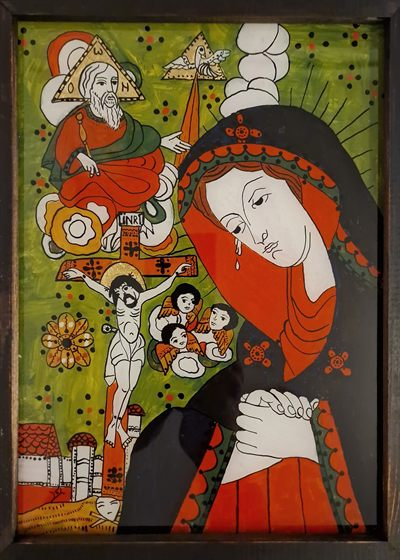

Icoane disponibile
Disponibile acum
Icoane încheiate în atelier, care își caută casa. Fiecare este unicat, pictată de mână în tempera pe sticlă.
2 lucrări
Disponibilă

Maica Domnului Îndurerată
Izvod: Savu Moga, Țara Făgărașului,1877
Disponibilă
Intrarea Domnului în Ierusalim
Izvod: Arpașu de Sus
Vă doriți una dintre aceste icoane în căminul dumneavoastră sau ca dar pentru cineva drag? Scrieți-mi un mesaj pentru preț și alte detalii.